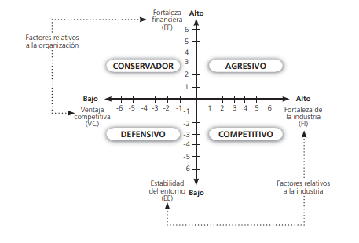

La matriz de la posición estratégica y la evaluación de la acción (PEYEA) de Dickel (1984) es usada para determinar la apropiada postura estratégica de una organización o de sus unidades de negocio. La matriz PEYEA (space, en inglés) tiene dos ejes que combinan factores relativos a la industria (fortaleza de la industria y estabilidad del entorno) y dos ejes que combinan factores relativos a la organización (fortaleza financiera y ventaja competitiva) en extremos de alto y bajo que forman un marco de cuatro cuadrantes, cada uno asociado con una postura estratégica básica: agresiva, conservadora, defensiva, o competitiva. El resultado del uso de esta matriz indica la postura estratégica más apropiada para la organización.
